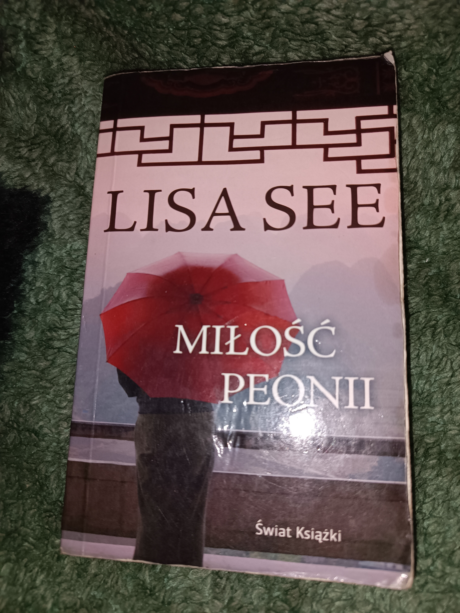

Miłość peonii
Niestandardowa książka opowiadająca o losach kobiet 3 kobiet w XVI wieku,
bez spoilerów, jest to opowieść inna niż się na samym początku wydaje
wyglądając na samym początku jak historia miłosna, żeby dowiedzieć się
więcej polecam zajrzeć samemu, poza tym podobało mi się przestawienie
realiów, praktyk itp Chin w tamtym czasie, dlatego uważam że warto
zajrzeć.
